Afterglow, shortened as Afuro or Aglo, is a band composed of 5 childhood friends Mitake Ran (Vocalist and Rhythm Guitarist), Aoba Moca (Lead Guitarist),
Uehara Himari (Bassist), Udagawa Tomoe (Drummer), Hazawa Tsugumi (Keyboardist) who all study at Haneoka Girls' High School and are
classmates with each other.
Ran moved to a different class in middle school, thus separating the squad. They decided to form a band so that they would still see each other
and have a way to bond with each other. They practice after school and even attend live shows and gigs. They are fairly popular for their energetic and powerful
performances.
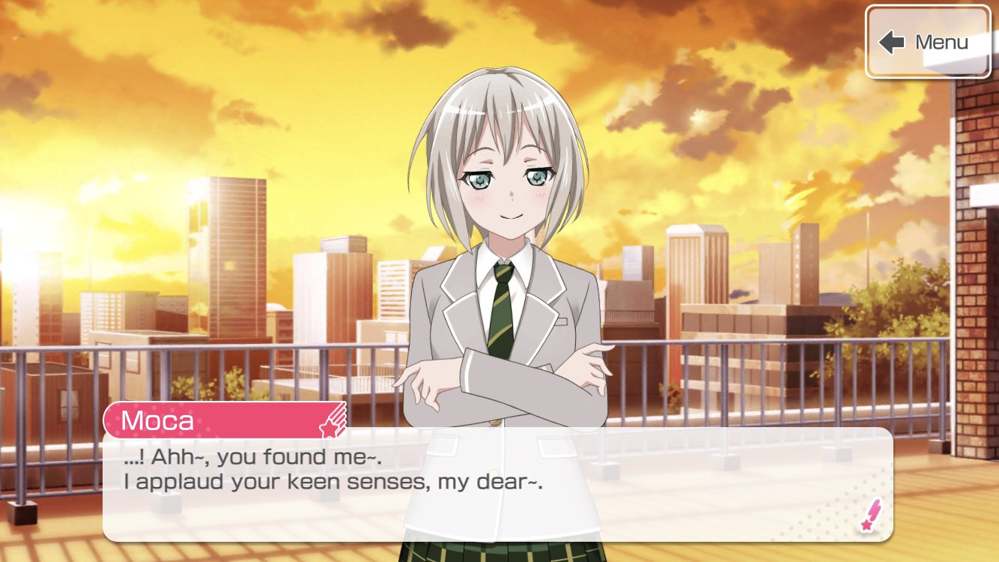
Afterglow currently has 3 band stories in-game (currently only 1 in EN servers) "Afterglow, The Same As Always", "Tied to the Skies", and "ONE OF US",
adding all up to 50 chapters.
MEDIA
Afterglow was featured in all 3 seasons of the anime as well as GARUPA☆PICO as Ran was one of the singers for the theme songs for each season along
with the other 6 vocalists.
Afterglow, along with the other original 4 bands, were featured in "BanG Dream! FILM LIVE" and in "BanG Dream! FILM LIVE 2nd Stage", the latter with Morfonica and RAS.
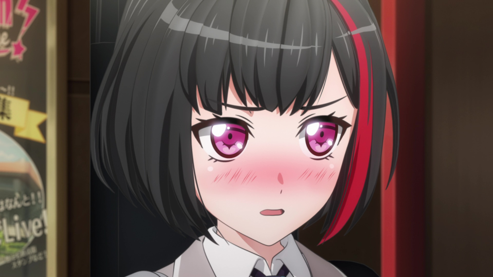
MEMBERS / CHARACTERS
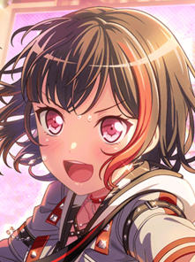
Class: 2-A Birthday: April 10 Height: 157cm
Mitake Ran (美竹 蘭)
Mitake Ran is the vocalist and rhythm guitarist of Afterglow. She is strong-willed and competitive, but is seen as someone who
cherishes her loved ones deeply. She is somewhat aloof, cold, and socially awkward at times, though she is warmhearted and can be
easily flustered. She considers Yukina (Roselia) as her rival.
Her epithet is "Defiant Red Mesh".
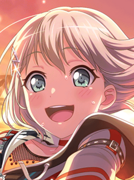
Class: 2-A Birthday: September 3 Height: 158cm
Aoba Moca (青葉 モカ)
Aoba Moca is the lead guitarist of Afterglow.
Her behavior would seem always sleepy and sluggish and she speaks in
a monotone voice. She doesn't have any interests besides music and bread being a very big fan of the Yamabuki Bakery. She is confident, relaxed, and likes to tease those close to her.
She works part-time at the same convenience store as Lisa (Roselia).
Her epithet is "Go My Way".
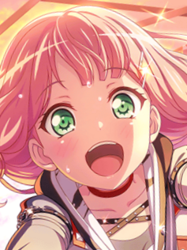
Class: 2-A Birthday: October 23 Height: 155cm
Uehara Himari (上原 ひまり)
Uehara Himari is the leader and bassist of Afterglow. Though she is the band leader, her ideas are usually declined.
She is a cheerful, amiable, and somewhat clumsy person who is also very sentimental.
She loves sweets, comparing those from different stores and even enjoys making them.
She usually says her catchphrase "Hey, hey, ooh!".
Her epithet is "Rally Misfire".
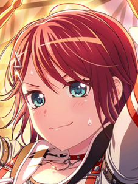
Class: 2-A Birthday: April 15 Height: 168cm
Udagawa Tomoe (宇田川 巴)
Udagawa Tomoe is the drummer of Afterglow. She is seen as mature and cool but is also both relaxed and hotblooded. She is also caring and supportive especially to her younger sister Ako (Roselia)
and the other members of Afterglow. She is also a taiko drummer and is addicted to ramen.
Her epithet is "Ramen Broth Caring Sister".
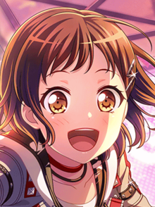
Class: 2-A Birthday: January 7 Height: 156cm
Hazawa Tsugumi (羽沢 つぐみ)
Hazawa Tsugumi is the keyboardist of Afterglow. She was the one to suggest to form their band as childhood friends. She is very optimistic and diligent, as well as
the one who lifts the spirit of the band during tough times.
She is interested in astrology and loves watching dolphin shows at aquariums.
Her family owns a cafe wherein she helps out sometimes.
She is the student council vice president of Haneoka. Her epithet is the "Great Ordinary".
VOICE ACTRESSES / SEIYUUS
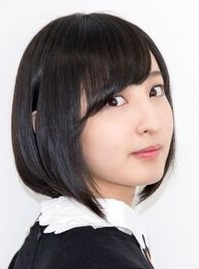
Nickname: Ayaneru Age: 28 Height: 157cm
Sakura Ayane (佐倉 綾音)
Sakura Ayane, or Ayaneru, voices Mitake Ran. She was born on January 29, 1994. She wanted to be an actress since she was a child and
enrolled in an acting school in junior high school, but decided to pursue voice acting instead. She made her debut as a seiyuu in 2010 under I'm
Enterprise. Her hobbies are drawing, reading, singing, listening to sports radio stations. She describes herself as tomboyish, logical and reasonable.
She is affiliated with I'm Enterprise.
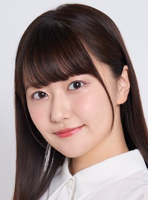
Nickname: Sacchan Age: 29 Height: 161cm
Misawa Sachika (三澤 紗千香)
Misawa Sachika, or Sacchan, voices Moca Aoba. She was born on January 13, 1993. She debuted as a voice actress in 2009 after winning a voice acting
competition. Her hobbies are playing the guitar, watching shows, doing poetry, and choral singing. Despite being a member of a non-live band, she performed
during the BanG Dream! 7th☆LIVE as Moca (on Guitar).
She is a seiyuu under Stardust Promotion and a singer under Universal Music Japan.
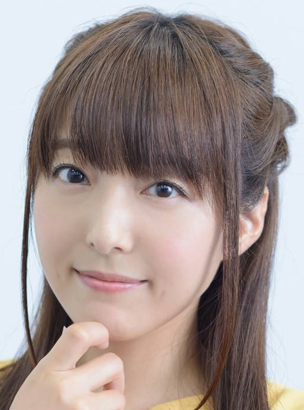
Nickname: Emirin Age: 38 Height: 155cm
Katou Emiri (加藤 英美里)
Katou Emiri, or Emirin, is the voice actress of Uehara Himari. She was born on November 26, 1983. She used to play drums in high school.
She debuted as a seiyuu in 2004 and a singer in 2008, although she originally
wanted to work at a game company. She does photography, draws, and games.
She is seiyuu under 81 Produce and a singer under Pony Canyon.
Nickname: Hiyocchi Age: 36 Height: 155cm
Hikasa Yoko (日笠 陽子)
Hikasa Yoko, or Hiyocchi, voices Udagawa Tomoe. She was born on July 16, 1985. As a child, she wanted to become a voice actress and
enrolled in a voice actor training school after graduating high school. She debuted in 2007. Her hobbies are cooking and she knows how to
sew, do calligraphy, and aromatherapy. She is fond of basketball and baseball and is also a gamer. In 2009, she learned to play bass for a role in the anime
"K-ON!"
She is seiyuu under I'm Enterprise and a singer under Pony Canyon.
Nickname: Hiichan Age: 34 Height: 157cm
Kanemoto Hisako (金元 寿子)
Kanemoto Hisaki, or Hii-chan, is the voice actress of Hazawa Tsugumi. She was born on December 16, 1987. She enrolled in a voice acting college and debuted in 2009.
She used to perform as a seiyuu under the name "Aikawa Juri" but later on used her real name. She debuted as a solo artist in 2014. She is skilled at basketball and volleyball.
Her hobbies are watching movies, listening to music, and making bread.
She is seiyuu under Production Baobab and a singer under Victor Entertainment.
DISCOGRAPHY
ORIGINAL SONGS:
Afterglow's first and only album "ONE OF US" was released on March 2021. It consists of 11 songs while the band has a total of 21 songs.
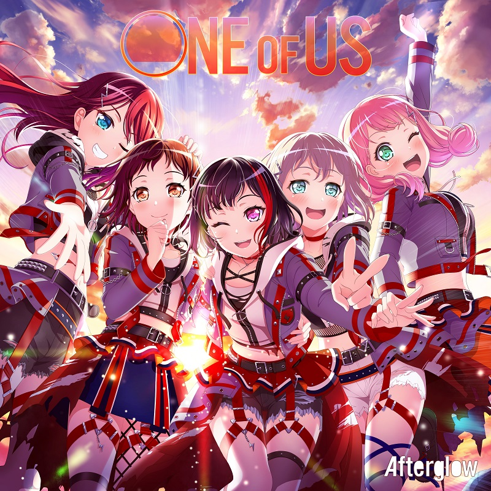
ONE OF US
Easy come, Easy go!
Hey-day Capriccio
I knew it!
ON YOUR MARK
ONE OF US
RED RED RED
Sasanqua
SENSENFUKOKU
That Is How I Roll!
Tsunagu, Soramoyou
Y.O.L.O!!!!!
Other Original Songs:
COMIC PANIC!!!
I love your way!
Itsumo Doori no Brand new days
Jamboree! Journey!
Kanayume
Off we go.
Rumbling Memory
Scarlet Sky
Trouble Joyful!!
True color
Afterglow - SENSENFUKOKU
Afterglow - Tsunagu, Soramoyou
COVER SONGS:
The band has covered 27 songs.
Ai no Scenario
Amanojaku
Aoi Shiori
Asu no Yozora Shoukaihan
Butter-fly
Crow Song
Don't say "lazy"
Goya no Machiawase
Great escape
How to Sekai Seifuku
Humanoid
Imagination
Inferno
Karma
Kasabuta
Lost One no Goukoku
Northern Lights
Pride Kakumei
Rashisa
Reach Out To The Truth
READY STEADY GO
Redo
Roki
Rolling star
Sobakasu
Samurai Heart (Some Like It Hot!!)
Shunkan Sentimental
Venom
MikitoP feat. Kagamine Rin - Roki
(covered by Afterglow)